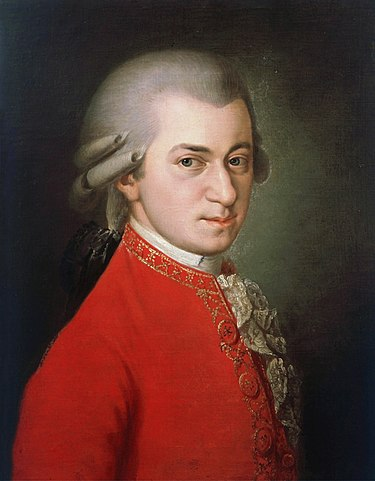

Életrajz
Wolfgang Amadeus Mozart (teljes neve Johannes Chrysostomus Wolfgangus Theophilus Mozart) (Salzburg, 1756. január 27. – Bécs, 1791. december 5.) osztrák bécsi klasszikus zeneszerző, zongorista, karnagy és zenepedagógus. Zenei tehetsége korán megmutatkozott, első zeneműveit hatévesen komponálta. Édesapja, Leopold Mozart pedig, aki a salzburgi érseki udvar muzsikusa volt, lejegyezte őket, és mindent megtett annak érdekében, hogy fia minél alaposabb zenei képzésben részesüljön. Mikor nyilvánvaló lett számára Wolfgang rendkívüli tehetsége, úgy érezte, hogy kötelessége azt megmutatni az embereknek. Ennek érdekében hosszú koncertkörutakat szervezett gyermekei számára, amelyek során a csodagyerekek a korabeli Európa szinte valamennyi jelentős zenei és uralkodói központjába eljutottak. A fiatal Mozartnak így lehetősége nyílt megismernie a korabeli Itália, Párizs, London, Bécs zenei világát. Tizenegy évesen már egész estét betöltő vígoperát komponált, tizennégy évesen pedig megírta első opera seriáját.

...
Két itáliai utazásuk után apa és fia hosszabb időt töltött Salzburgban, majd miután az új érsek, Hieronymus von Colloredo (1732–1812) nem engedélyezte az apa hosszabb időre való eltávozását, Mozart az édesanyjával (Anna Maria Pertl) indult utolsó nagy koncertkörútjára, Párizsba. Útközben hosszabb időt töltöttek Mannheimben, ahol megismerte első nagy szerelmét, Aloysia Webert. Párizsban aztán nem sikerült állást találnia, ráadásul édesanyja megbetegedett és meghalt. Miután hazautazott, az érseki udvar muzsikusa lett. 1781-ben a müncheni városi színház felkérte, hogy komponáljon új operát a karneváli szezonra. Mozart elvállalta a feladatot, és megírta az Idomeneót, amely nagy sikert aratott. A bemutató után a városban töltötte az egész farsangi időszakot, majd rokonaihoz utazott Augsburgba. Innen rendelte magához Hieronymus von Colloredo érsek Bécsbe. A császárvárosban többször is megalázóan bánt Mozarttal, aki ezt nem hagyta szó nélkül. Végül úgy megsértette a főpapot, hogy szó szerint kidobták az érseki palotából.
...
Mozart ekkor végleg szakított a salzburgi érseki udvarral. Bécsben telepedett le, ahol elsősorban tanításból tartotta fenn magát. 1782-ben feleségül vette Costanze Webert. Még ebben az évben bemutatta Szöktetés a szerájból című daljátékát, amely első komoly operasikere volt Bécsben. Közben apja megbékélt a Weber családdal, akikkel szemben a kezdettől fogva ellenszenvet érzett. Ennek eredményeképpen meghívta fiát és feleségét, hogy látogassák meg Salzburgban. A fiatal házaspár eleget is tett a kérésnek, majd ők hívták vissza Leopoldot Bécsbe. Mozart közben hasztalan próbált szert tenni jól jövedelmező állásra. Összeismerkedett Haydnnal, akinek hat vonósnégyesét ajánlotta. 1786-ban megírta első közös operáját Da Pontéval, a Figaro házasságát. A darab a szerzők elleni intrika miatt nem sokáig volt műsoron Bécsben, de Prágában nagy sikert aratott. A cseh főváros meg is hívta Mozartot, hogy személyesen vezényelje az opera néhány előadását a városban, valamint ott koncertezzen. A prágai színház új operát is rendelt tőle. Nem sokkal Bécsbe való visszatérése után értesült édesapja haláláról, akinek temetésére sem utazott haza. 1787-ben a Don Giovannit óriási sikerrel mutatták be Prágában.